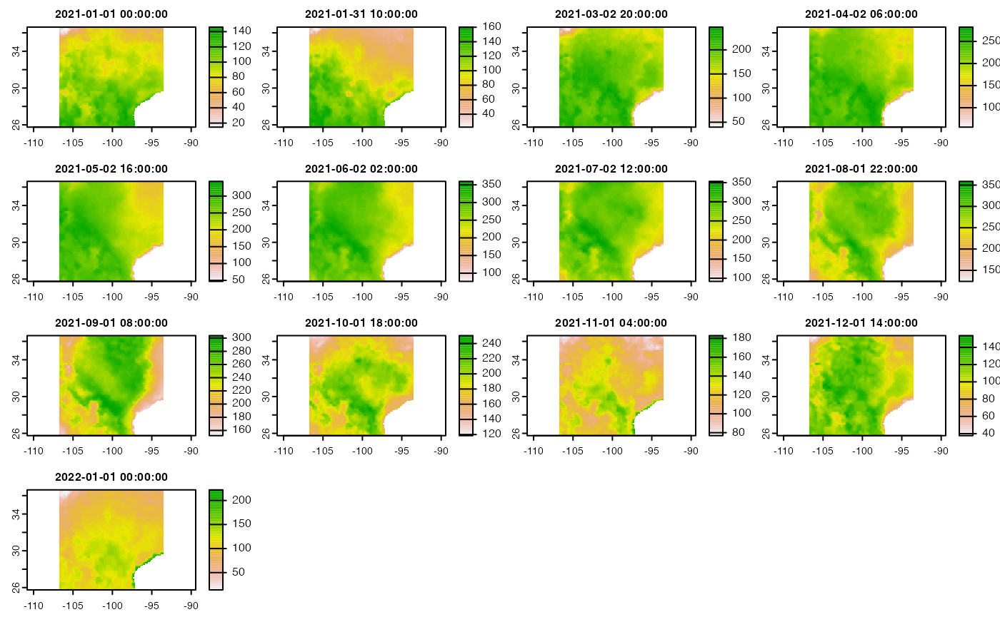

The initial Vignette highlighted how to extract subsets of data when the source data set was known. A second goal of opendap.catalog is to provide an evolving catalog of available data resources with the information needed to access them. As of 03/2022 there are 14160 datasets identified and stored in opendap.catalog::params. In these there are 1742 unique data sources, and 2331 unique variables.
dplyr::glimpse(opendap.catalog::params)
#> Rows: 14,160
#> Columns: 15
#> $ id <chr> "hawaii_soest_1727_02e2_b48c", "hawaii_soest_1727_02e2_b48c"…
#> $ grid.id <chr> "71", "71", "71", "71", "71", "71", "71", "71", "71", "71", …
#> $ URL <chr> "https://apdrc.soest.hawaii.edu/erddap/griddap/hawaii_soest_…
#> $ tiled <chr> "", "", "", "", "", "", "", "", "", "", "", "", "", "", "", …
#> $ variable <chr> "nudp", "nusf", "nuvdp", "nuvsf", "nvdp", "nvsf", "sudp", "s…
#> $ varname <chr> "nudp", "nusf", "nuvdp", "nuvsf", "nvdp", "nvsf", "sudp", "s…
#> $ long_name <chr> "number of deep zonal velocity profiles", "number of surface…
#> $ units <chr> NA, NA, NA, NA, NA, NA, NA, NA, NA, NA, NA, NA, NA, NA, NA, …
#> $ model <chr> NA, NA, NA, NA, NA, NA, NA, NA, NA, NA, NA, NA, NA, NA, NA, …
#> $ ensemble <chr> NA, NA, NA, NA, NA, NA, NA, NA, NA, NA, NA, NA, NA, NA, NA, …
#> $ scenario <chr> NA, NA, NA, NA, NA, NA, NA, NA, NA, NA, NA, NA, NA, NA, NA, …
#> $ T_name <chr> "time", "time", "time", "time", "time", "time", "time", "tim…
#> $ duration <chr> "2001-01-01/2022-01-01", "2001-01-01/2022-01-01", "2001-01-0…
#> $ interval <chr> "365 days", "365 days", "365 days", "365 days", "365 days", …
#> $ nT <int> 22, 22, 22, 22, 22, 22, 22, 22, 22, 22, 22, 22, 22, 22, 22, …For use in other applications (e.g. stars proxy, geoknife, climateR or python/go/Rust applciations) this catalog is available as a JSON artifact here.
read_json('https://mikejohnson51.github.io/opendap.catalog/cat_params.json', simplifyVector = TRUE)| Name | Description | Details |
|---|---|---|
| id |
opendap.catalog unique identifier |
|
| grid.id |
opendap.catalog unique grid identifier |
See opendap.catalog::grids |
| URL | Location of resource | |
| tiled | Is the resource temporally (T) or spatially (XY) tiled | See Vignette 3 |
| variable | name of the variable in data description | |
| varname | name of variable in data set description | |
| long_name | NetCDF Long Name attribute | |
| units | NetCDF Long Name units attribute | |
| model | Model Type/version | Often GCM |
| ensemble | Model ensemble member | |
| scenario | Model scenario | Often RCPs |
| T_name | Name of time dimension | |
| duration | start and end date of data (start/end) | |
| interval | time step between duration | |
| nT | number of time slices |
search <- filter(params,
grepl("NLDAS", id),
grepl("FOR", model),
grepl("potential evaporation", long_name),
scenario == 'M.2.0',
grepl("month", interval))
glimpse(search)
#> Rows: 1
#> Columns: 15
#> $ id <chr> "NLDAS"
#> $ grid.id <chr> "166"
#> $ URL <chr> "https://hydro1.gesdisc.eosdis.nasa.gov/dods/NLDAS_FORA0125_…
#> $ tiled <chr> ""
#> $ variable <chr> "potevap"
#> $ varname <chr> "potevap"
#> $ long_name <chr> "potential evaporation [kg m-2] "
#> $ units <chr> "kg m-2"
#> $ model <chr> "FORA0125"
#> $ ensemble <chr> NA
#> $ scenario <chr> "M.2.0"
#> $ T_name <chr> "time"
#> $ duration <chr> "1979-01-01/2022-01-01"
#> $ interval <chr> "1 months"
#> $ nT <int> 517Catalog item rather then URL!
tx_2021_pet = dap(catolog = search,
AOI = AOI::aoi_get(state = "TX"),
startDate = "2021-01-01",
endDate = "2021-12-31")
#> source: https://hydro1.gesdisc.eosdis.nasa.gov/dods/NLDAS_FORA0125_M...
#> varname(s):
#> > potevap [kg m-2] (potential evaporation [kg m-2] )
#> ==================================================
#> diminsions: 106, 87, 13 (names: lon,lat,time)
#> resolution: 0.125, 0.125, 1 months
#> extent: -106.75, -93.5, 25.75, 36.62 (xmin, xmax, ymin, ymax)
#> crs: +proj=longlat +a=6378137 +f=0.00335281066474748 +p...
#> time: 2021-01-01 to 2022-01-01
#> ==================================================
#> values: 119,886 (vars*X*Y*T)
glimpse(grids)
#> Rows: 529
#> Columns: 14
#> $ grid.id <chr> "1", "10", "100", "101", "102", "103", "104", "105", "106"…
#> $ X_name <chr> "x", "longitude", "longitude", "longitude", "longitude", "…
#> $ Y_name <chr> "y", "latitude", "latitude", "latitude", "latitude", "lati…
#> $ X1 <dbl> -1.228600e+07, -3.600000e+02, -1.799900e+02, -1.799865e+02…
#> $ Xn <dbl> 12286000.0000, -3.7500, 180.0000, 179.9865, 179.9812, 179.…
#> $ Y1 <dbl> -1.228600e+07, -8.715909e+01, -8.999000e+01, -8.998650e+01…
#> $ Yn <dbl> 1.228600e+07, 8.715909e+01, 8.999000e+01, 8.998650e+01, 8.…
#> $ resX <dbl> 4.000000e+03, 3.750000e+00, 1.000000e-02, 2.700068e-02, 3.…
#> $ resY <dbl> 4.000000e+03, 3.708898e+00, 1.000000e-02, 2.699865e-02, 3.…
#> $ ncols <dbl> 6144, 96, 36000, 13333, 9600, 8640, 8640, 8640, 8640, 8640…
#> $ nrows <dbl> 6144, 48, 17999, 6667, 4800, 4320, 4320, 4320, 4320, 4320,…
#> $ proj <chr> "+proj=longlat +a=6378137 +f=0.00335281066474748 +pm=0 +no…
#> $ toptobottom <lgl> TRUE, TRUE, TRUE, TRUE, TRUE, FALSE, FALSE, TRUE, TRUE, FA…
#> $ tile <chr> NA, NA, NA, NA, NA, NA, NA, NA, NA, NA, NA, NA, NA, NA, NA…| Name | Description | Details |
|---|---|---|
| grid.id |
opendap.catalog unique grid identifier |
|
| X_name | X dimension name in data set | |
| Y_name | Y dimension name in data set | |
| X1 | The first X value in the X_name array | |
| Xn | The last X value in the X_name array | |
| Y1 | The first Y value in the X_name array | |
| Yn | The last Y value in the X_name array | |
| resX | Resolution of X_name array | |
| resY | Resolution of Y_name array | |
| ncols | Number of columns in the XY array | |
| nrows | Number of rows in the XY array | |
| proj | Data set projection | |
| toptobottom | It is organized in left to right,top to bottom pixel order. | |
| tile | If the dataset has a tiled XY partition, what is the tile name? |
glimpse(merge(search, grids))
#> Rows: 1
#> Columns: 28
#> $ grid.id <chr> "166"
#> $ id <chr> "NLDAS"
#> $ URL <chr> "https://hydro1.gesdisc.eosdis.nasa.gov/dods/NLDAS_FORA012…
#> $ tiled <chr> ""
#> $ variable <chr> "potevap"
#> $ varname <chr> "potevap"
#> $ long_name <chr> "potential evaporation [kg m-2] "
#> $ units <chr> "kg m-2"
#> $ model <chr> "FORA0125"
#> $ ensemble <chr> NA
#> $ scenario <chr> "M.2.0"
#> $ T_name <chr> "time"
#> $ duration <chr> "1979-01-01/2022-01-01"
#> $ interval <chr> "1 months"
#> $ nT <int> 517
#> $ X_name <chr> "lon"
#> $ Y_name <chr> "lat"
#> $ X1 <dbl> -124.9375
#> $ Xn <dbl> -67.0625
#> $ Y1 <dbl> 25.0625
#> $ Yn <dbl> 52.9375
#> $ resX <dbl> 0.125
#> $ resY <dbl> 0.125
#> $ ncols <dbl> 464
#> $ nrows <dbl> 224
#> $ proj <chr> "+proj=longlat +a=6378137 +f=0.00335281066474748 +pm=0 +no…
#> $ toptobottom <lgl> TRUE
#> $ tile <chr> NALike parms, grids attributes can also be accessed as a JSON:
read_json('https://mikejohnson51.github.io/opendap.catalog/cat_grids.json', simplifyVector = TRUE)
(search <- filter(params,
grepl("MOD16A2.006", id),
grepl("PET_500m", varname)))
#> # A tibble: 1 × 15
#> id grid.id URL tiled variable varname long_name units model ensemble
#> <chr> <chr> <chr> <chr> <chr> <chr> <chr> <chr> <chr> <chr>
#> 1 MOD16A2.0… XY_mod… http… XY_m… NA PET_50… MODIS Gr… kg/m… NA NA
#> # … with 5 more variables: scenario <chr>, T_name <chr>, duration <chr>,
#> # interval <chr>, nT <int>
glimpse(merge(search, grids))
#> Rows: 283
#> Columns: 28
#> $ grid.id <chr> "XY_modis", "XY_modis", "XY_modis", "XY_modis", "XY_modis"…
#> $ id <chr> "MOD16A2.006", "MOD16A2.006", "MOD16A2.006", "MOD16A2.006"…
#> $ URL <chr> "https://opendap.cr.usgs.gov/opendap/hyrax/MOD16A2.006", "…
#> $ tiled <chr> "XY_modis", "XY_modis", "XY_modis", "XY_modis", "XY_modis"…
#> $ variable <chr> NA, NA, NA, NA, NA, NA, NA, NA, NA, NA, NA, NA, NA, NA, NA…
#> $ varname <chr> "PET_500m", "PET_500m", "PET_500m", "PET_500m", "PET_500m"…
#> $ long_name <chr> "MODIS Gridded 500m 8-day Composite potential Evapotranspi…
#> $ units <chr> "kg/m^2/8day", "kg/m^2/8day", "kg/m^2/8day", "kg/m^2/8day"…
#> $ model <chr> NA, NA, NA, NA, NA, NA, NA, NA, NA, NA, NA, NA, NA, NA, NA…
#> $ ensemble <chr> NA, NA, NA, NA, NA, NA, NA, NA, NA, NA, NA, NA, NA, NA, NA…
#> $ scenario <chr> NA, NA, NA, NA, NA, NA, NA, NA, NA, NA, NA, NA, NA, NA, NA…
#> $ T_name <chr> "time", "time", "time", "time", "time", "time", "time", "t…
#> $ duration <chr> "2001-01-01/2022-02-02", "2001-01-01/2022-02-02", "2001-01…
#> $ interval <chr> "8 days", "8 days", "8 days", "8 days", "8 days", "8 days"…
#> $ nT <int> 970, 970, 970, 970, 970, 970, 970, 970, 970, 970, 970, 970…
#> $ X_name <chr> "XDim", "XDim", "XDim", "XDim", "XDim", "XDim", "XDim", "X…
#> $ Y_name <chr> "YDim", "YDim", "YDim", "YDim", "YDim", "YDim", "YDim", "Y…
#> $ X1 <dbl> -20015109, -20015109, -20015109, -18903159, -18903159, -18…
#> $ Xn <dbl> -18903622, -18903622, -18903622, -17791672, -17791672, -17…
#> $ Y1 <dbl> 1111951, 0, -1111951, 1111951, 0, -1111951, -2223901, 3335…
#> $ Yn <dbl> 463.3127, -1111487.2070, -2223437.7266, 463.3127, -1111487…
#> $ resX <dbl> 463.3127, 463.3127, 463.3127, 463.3127, 463.3127, 463.3127…
#> $ resY <dbl> 463.3127, 463.3127, 463.3127, 463.3127, 463.3127, 463.3127…
#> $ ncols <dbl> 2400, 2400, 2400, 2400, 2400, 2400, 2400, 2400, 2400, 2400…
#> $ nrows <dbl> 2400, 2400, 2400, 2400, 2400, 2400, 2400, 2400, 2400, 2400…
#> $ proj <chr> "+proj=sinu +lon_0= +x_0= +y_0= +units=m +a=6371007.181 +b…
#> $ toptobottom <lgl> FALSE, FALSE, FALSE, FALSE, FALSE, FALSE, FALSE, FALSE, FA…
#> $ tile <chr> "h00v08", "h00v09", "h00v10", "h01v08", "h01v09", "h01v10"…